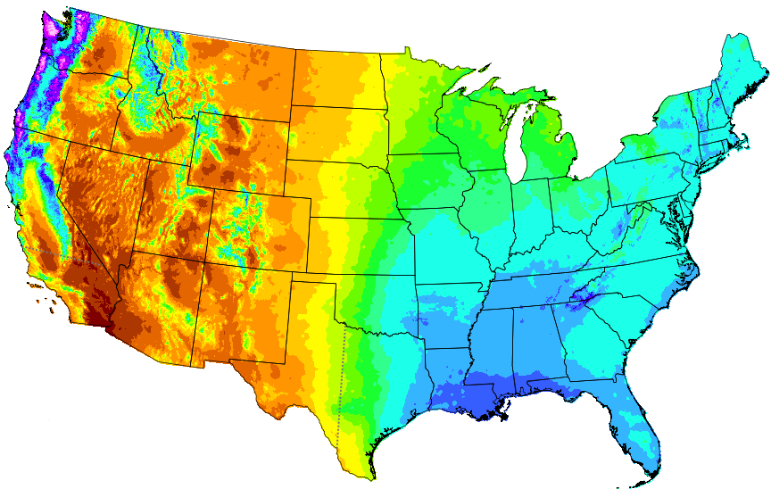

PRISM Review Map
Because clicking on maps is fun
By Basil Veerman
Project inspiration by Faron Anslow
What is PRISM?
The PRISM Climate Group gathers climate observations from a wide range of monitoring networks, applies sophisticated quality control measures, and develops spatial climate datasets to reveal short- and long-term climate patterns.
First sentance on PRISM website
Climate Normals
Scientific Review?
Web based UI
- Makes BC Gov designed webmaps look good
- Known to cause blindness in all tested subjects*
- Is broken
* n = 0
Proposal
Take This
Add a Clicky Clicky Sendy Sendy
Or not...
-
Requires server side code
More functionality/code than necessary
Not learning anything new
I started to look at other options...
I started to get...
Excited


{kind=link}
Full greenfield
- Leaflet (map)
- Twitter Bootstrap (styling)
- Handlebars (client side templating)
- Firebase (data store)
- Hello.js (authentication)
- Github (revision control and hosting)
I started to get...
Realy excited

Results?
The new review UX is 1.3e9 x better than that used for the previous maps
Demo
Limitations
- Reported points not tied to affected layer
- Transparency not adjustible
- Legend is ugly
-
Report data stored in JSON
For now... Review Master